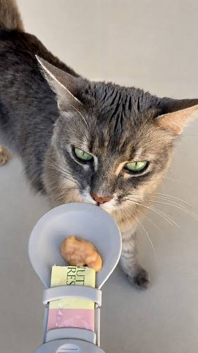

"Eu costumava esquecer de comprar a ração da Luna bem no dia que acabava, mas desde que ativei a Assinatura Petz pelo aplicativo, minha rotina mudou. O desconto de 10% ajuda muito nas contas do mês e as entregas em casa chegam sempre certinhas e super rápidas. Para quem tem o dia a dia corrido, o serviço é indispensável e funciona perfeitamente." — Mariana Costa, tutora da vira-lata Luna."
"Levei o Thor às pressas para o Centro Veterinário Seres durante a madrugada por conta de uma crise alérgica severa. O atendimento no hospital 24 horas foi impecável, com veterinários muito atenciosos que me acalmaram e medicaram ele rápido. A estrutura deles é de primeiro mundo e me deu total segurança saber que tinham todos os exames e a farmácia à disposição naquele momento." — Carlos Eduardo, tutor do Golden Retriever Thor."
"O Paçoca é super traumatizado com barulho de secador, mas os profissionais do Banho e Tosa da Petz têm uma paciência incrível com ele. Eu adoro o fato de podermos acompanhar o banho pelo vidro da loja, o que me deixa muito mais tranquila. Além disso, passear com ele pelos corredores da loja física enquanto espero o serviço acabar é o nosso programa favorito do sábado." — Beatriz Souza, tutora do Shih Tzu Paçoca."
